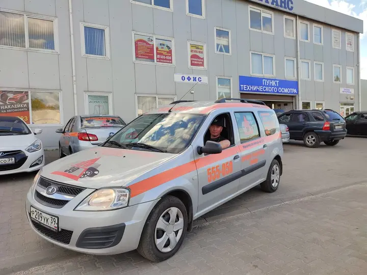
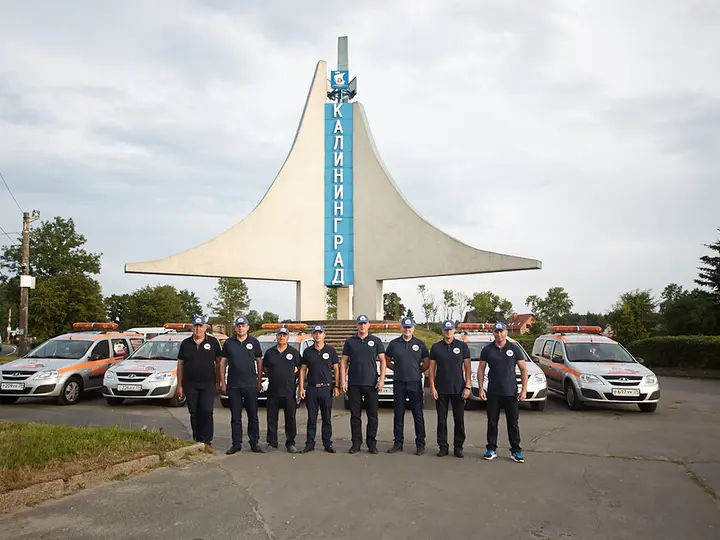
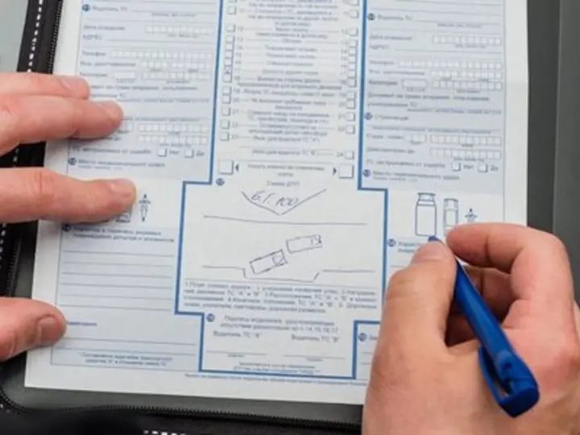

Приезжают быстро
Особенно важно, когда водитель растерян, дорога занята, а нужно сразу понять порядок действий.
Отзывы клиентов ДТП39
В отзывах чаще всего отмечают быстрый приезд, спокойные объяснения, помощь с документами и понятный порядок действий после оформления.
Яндекс
Мы не переносим отзывы как рекламные цитаты без контекста. На странице показаны сокращённые пересказы, а полная история оценок и комментариев доступна в карточке организации на Яндексе.
Особенно важно, когда водитель растерян, дорога занята, а нужно сразу понять порядок действий.
Комиссар проверяет данные, схему, повреждения и помогает не упустить важные детали.
Клиент понимает, что делать на месте ДТП, когда обращаться в страховую и что сохранить.
Без лишнего давления: только фиксация ситуации, документы и следующий понятный шаг.
Фото из карточки
Для страницы подготовлены лёгкие WebP-версии фотографий из публичной карточки Яндекс Бизнес: автопарк, выездной автомобиль, команда и оформление документов.



Почему это важно
Водителю важно быстро понять, можно ли оформлять европротокол, что фиксировать на фото, какие документы подготовить и когда нужно вызвать ГИБДД. Отзывы помогают увидеть, что в ДТП39 берут на себя именно эту практическую часть.
Если авария произошла сейчас, не нужно разбираться в правилах в одиночку. Позвоните, коротко опишите ситуацию и адрес — подскажем первые действия и скажем, нужен ли выезд комиссара.
Позвонить 555-050